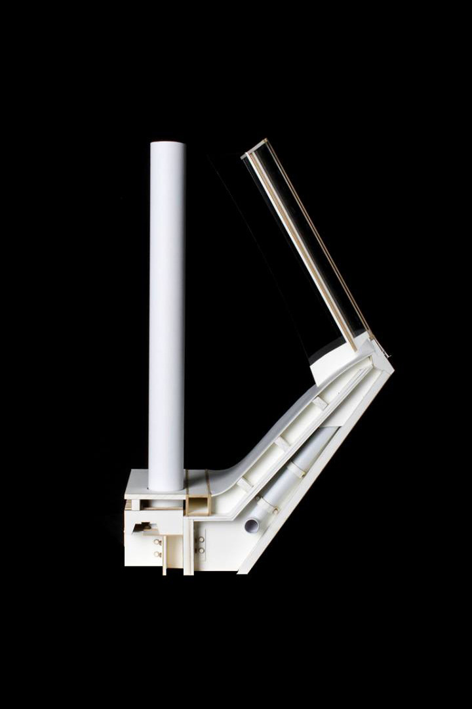
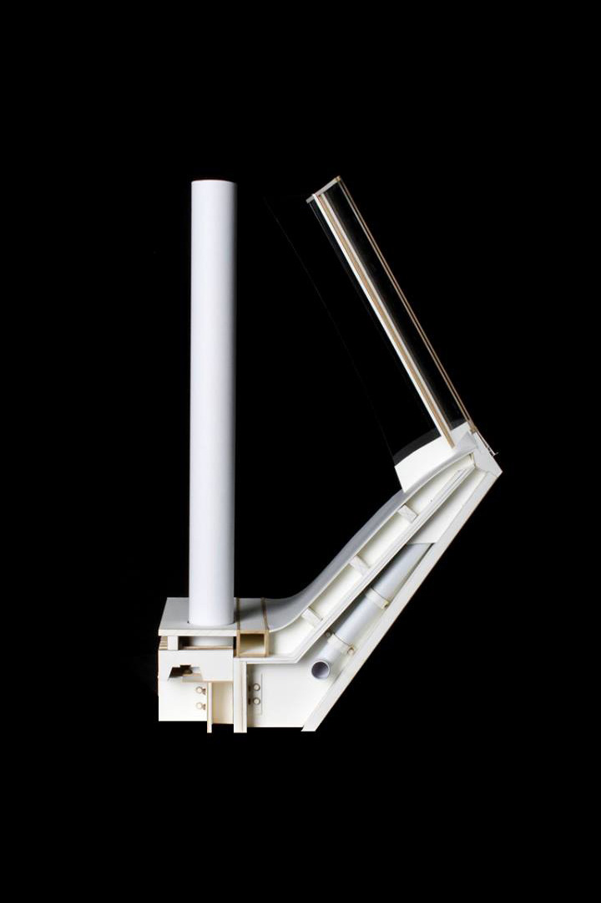

10 HILLS PLACE
Construction 3 | Professor Ulrich Dangel | Fall 2013
Team: Bernardo Jimenez
This case study analysis focuses on the construction techniques of 10 Hills Place by Amanda Levete architects. The office project maximizes natural light available in its narrow alley location through long, upturned windows. Following ship manufacturing techniques, the façade fits each glazed strip into aluminum panel cladding by tongue-and-groove connections. These details integrate into the window assembly to allow water drainage and window cleaning without drawing attention the gutters. As part of the study, I helped draw a version of the architect’s section and hand-modeled a portion of one window.
 
